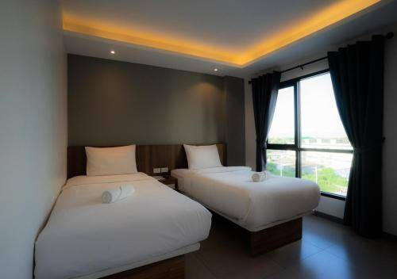
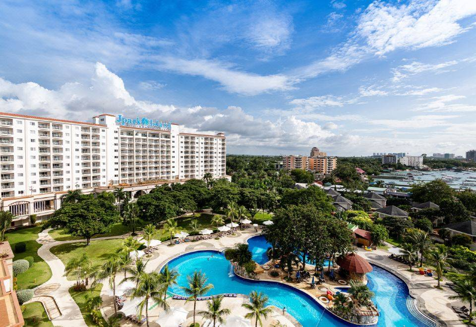
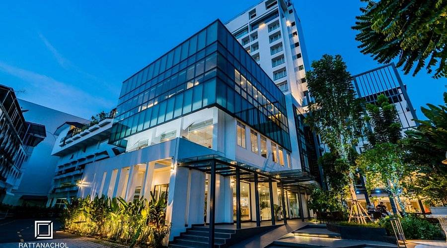
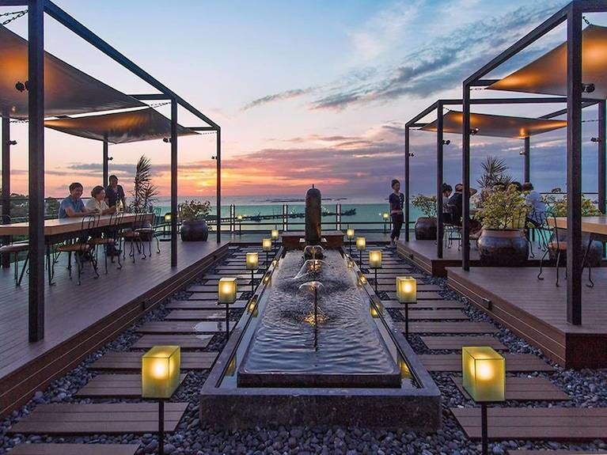

1. โรงแรม กีน ชลบุรี (GEEN Hotel Chonburi)

⭐ที่อยู่: ต.บ้านสวน อ.เมืองชลบุรี จ.ชลบุรี ⭐ข้อมูลที่พัก: โรงแรมระดับ 4 ดาว ดีไซน์โมเดิร์นทันสมัย เพียบพร้อมด้วยสระว่ายน้ำระบบเกลือ ฟิตเนส และอ่างแช่น้ำร้อน บรรยากาศสงบ เหมาะแก่การพักผ่อน ⭐ราคาเริ่มต้น: ประมาณ ฿880 / คืน ⭐มุมสวยที่สุด: สระว่ายน้ำกลางแจ้งยามเย็น แสงไฟจากตัวอาคารสะท้อนผืนน้ำให้ลุคโมเดิร์นลักชูรี 2. โรงแรม เดอะ สลีป ชลบุรี (The Zleep Hotel Chonburi)

⭐ที่อยู่: ต.นาป่า อ.เมืองชลบุรี จ.ชลบุรี ⭐ข้อมูลที่พัก: โรงแรมระดับ 3 ดาว เน้นความคุ้มค่า ห้องพักสะอาด ตกแต่งสไตล์เรียบหรูและทันสมัย มีบริการ Wi-Fi ฟรี อาหารเช้าฟรี และที่จอดรถกว้างขวาง ⭐ราคาเริ่มต้น: ประมาณ ฿867 / คืน ⭐มุมสวยที่สุด: ห้องพักหัวมุม (Corner Room) ที่เปิดรับแสงธรรมชาติ ให้ความรู้สึกมินิมอล อบอุ่น 3. โรงแรม เจ ปาร์ค ชลบุรี (J Park Hotel)

⭐ที่อยู่: ต.นาป่า อ.เมืองชลบุรี จ.ชลบุรี ⭐ข้อมูลที่พัก: โรงแรมระดับ 3 ดาว โดดเด่นด้วยห้องพักขนาดใหญ่เป็นพิเศษ การตกแต่งเน้นพื้นที่ใช้สอย กว้างขวาง มีสระว่ายน้ำขนาดใหญ่บริการส่วนกลาง ⭐ราคาเริ่มต้น: ประมาณ ฿986 / คืน ⭐มุมสวยที่สุด: โซนสระว่ายน้ำขนาดใหญ่ ท่ามกลางตึกที่พัก เหมาะแก่การมาพักผ่อนและถ่ายรูปเช็กอิน 4. รัตนชล โฮเต็ล (Rattanachol Hotel)
⭐ที่อยู่: ต.บางปลาสร้อย อ.เมืองชลบุรี จ.ชลบุรี (ติดถนนสุขุมวิท) ⭐ข้อมูลที่พัก: โรงแรมระดับ 4 ดาว มาตรฐานบริการระดับสากล ห้องพักและห้องสวีทตกแต่งด้วยโทนสีสันสดใส มีห้องอาหารขนาดใหญ่และสิ่งอำนวยความสะดวกครบครัน ⭐ราคาเริ่มต้น: ประมาณ ฿1,514 / คืน ⭐มุมสวยที่สุด: โถงล็อบบี้เพดานสูง ตกแต่งหรูหรา และโซนห้องอาหารเช้าท่ามกลางสวนร่มรื่น 5. โก! โฮเทล ชลบุรี (GO! Hotel Chonburi)
⭐ที่อยู่: ต.เสม็ด อ.เมืองชลบุรี จ.ชลบุรี ⭐ข้อมูลที่พัก: โรงแรมสไตล์ Economy ระดับ 3 ดาว ดีไซน์เก๋ไก๋ทันสมัย สีสันสะดุดตา ตอบโจทย์คนรุ่นใหม่ มีพื้นที่ทำงาน Co-working Space ส่วนกลางให้บริการ ⭐ราคาเริ่มต้น: ประมาณ ฿900 - ฿1,100 / คืน ⭐มุมสวยที่สุด: โซน Co-working Space สุดชิค ที่เน้นสีสันสดใส ถ่ายรูปสวยทุกมุม